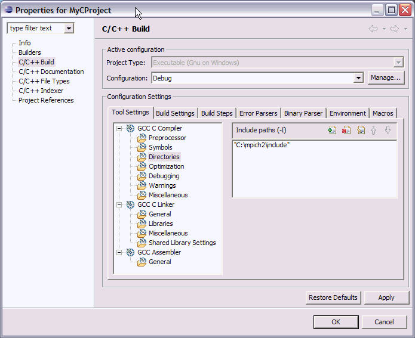
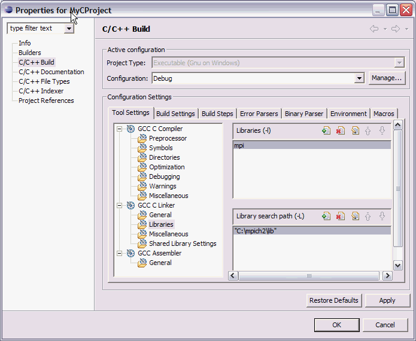
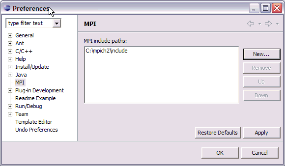

Setup for PTP MPI Tools Plug-in
Running the PTP MPI Tools plug-in
Launch Eclipse with the PTP MPI Tools feature (org.eclipse.ptp.mpi)
which includes two plug-ins:
-
org.eclipse.ptp.mpi.core
and
- org.eclipse.ptp.mpi.help
The CDT (or FDT) plug-ins are also required.
- Create a CDT project (e.g. Managed Make C Project)
- Create a source file e.g. test.c with MPI artifacts
(see testMPI.c).
- Set up the include paths etc:
Project Properties, C/C++ Build, Configuration Settings,
Tool Settings tab, Directories
--> Add include path for mpi header files etc. - path to the 'include' dir

Project Properties, C/C++ Build, Configuration Settings,
Tool Settings tab, GCC C Linker, Libraries
- Under "Libraries (-l)" add the symbol "mpi"
- Under "Library search path (-L)" add the path to the 'lib' dir in MPI dir.

- Make sure the Indexer is turned on
Project Properties, C/C++ Indexer, select "Full C/C++ Indexer (declarations and cross references)"
And also the same in Window, Prefs, C/C++, Indexer (this seems to be the
default setting for new projects)
- Tell the plug-in where to find the MPI header file
Window, Preferences, MPI
Add path to MPI include paths (again) - this tells it what symbols to look
for in the MPI Artifact view.

Now set up to run the MPI plug-in